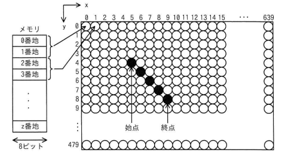

次の方式で画素にメモリを割り当てる640×480のグラフィックLCDモジュールがある。始点(5, 4)から終点(9, 8)まで直線を描画するとき，直線上のx=7の画素に割り当てられたメモリのアドレスの先頭は何番地か。ここで，画素の座標は(x, y)で表すものとする。
〔方式〕
ア 3847 イ 7680 ウ 7694 エ 8978

ウ：7694
| 選択肢 | 内容 | 補足 |
|---|---|---|
| ア | 3847 | 画素の通し番号（3848番目）をそのままアドレスとして扱うなど、「1画素=2番地」の換算（×2）を行わなかった場合に近い値 |
| イ | 7680 | y座標の計算や画素番号の数え方を誤った場合に生じやすい値 |
| ウ | 7694 | 正解。座標(7,6)が通し番号3848番目の画素であり、(3848－1)×2＝7694番地となる（bash_toolでの計算でも一致） |
| エ | 8978 | x,yの取り違えなど、画素位置の特定を誤った場合に生じやすい値 |
出典：2024年度 春期 応用情報技術者試験 午前 問22（IPA）